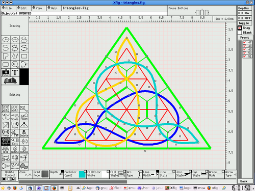
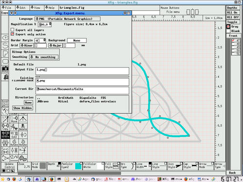
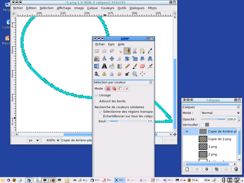
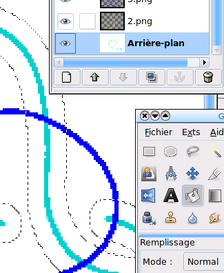
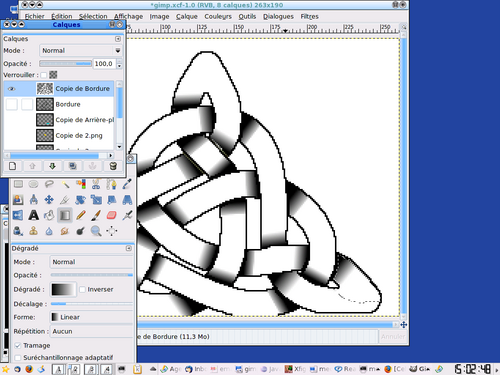
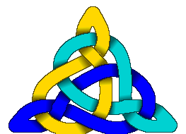

You can use Knotsbag that draws nice knots on windows/mac/linux.
But what if you want to draw things by hand. I mean on a computer (who uses pen nowadays?) but having to fiddle with things in a low-tech manner: it’s easier to get the attention of a prospective partner and your dog when you’re saying "I did it myself!" and she/he can actually tell, a computer would have done a better job than that!
The problem with nowadays software, is that everybody would say, "yeah, you printed out of the internet, that’s all, you’re not an artist". You can argue "No, I only downloaded the soft from the internet but..." and you won’t be able to finish your sentence, "yeah, see?".
Alright. You can as well actually think that you’ll make a better job than specialized software around.
Anyway, you can do nice things with free software, you’ll need a vectorial drawing software and a picture editor, I chose xfig and GIMP. And you could use inkscape and, well... say GIMP for example (no kidding, you simply can’t do without this tremendous piece of soft).
Then you draw your graph and use the spline tool in order to make the threads. Use one depth for each color. 
{kind=link}
Then export each thread in PNG format.  Import each one of them in a new separate layer in GIMP.
{kind=link}
With the "select by color" tool, click on the withe background and cut it out. Then you’ll see the different threads on top of one another.
{kind=link}
First, solve the self intersections: split each layer into 2, one with the bits of thread going above itslef, the other with the bits of thread going below (and the rest of the thread).
Then "inflate" each thread by the same factor: select with the magic wand (U key) or by color (Shift+O) the whole thread and Selection>Grow it by the same amount.  Then use the color selector (O key) and the bucket (Shift+B) to fill the selection with the color.
{kind=link}
{kind=link}
Then darken the contour: Selection>Boundary (1-2 pixels), then change the layer, add (Shift+click on an element with the magic wand or the selector by color) the other bit of thread of the same color. Do Selection>Boundary again, copy and paste it to a new layer you’ll place on top of them. Finally fill it with black and set the layer option to "only darken" (or any other option that suits your taste) and set the transparency to what you like.
Then erase each portion of thread that goes underneath the others. This is done layer by layer: Select a layer. Use the Freehand selector (Lasso F key) and Ctrl+drag around each crossing that goes underneat, removing it from the selection. Then only the crossing where the thread goes above remain selected. With this selection, go through each other layer and Edit>Clear (Ctrl+K) the selection.
Then you can go back to the boundary layer, duplicate it and work on gradients to have nice "underneath the bridge" effect. You’ll use the magic wand (U key) in one component (possibly refine using the Lasso intersection: key F then Ctrl+Shift drag around) and put there a gradient from black to white (L key then drag from the black to the white). Control the opacity and options of this layer to get the effect you want. 
{kind=link}
Et voilà! 
{kind=link}